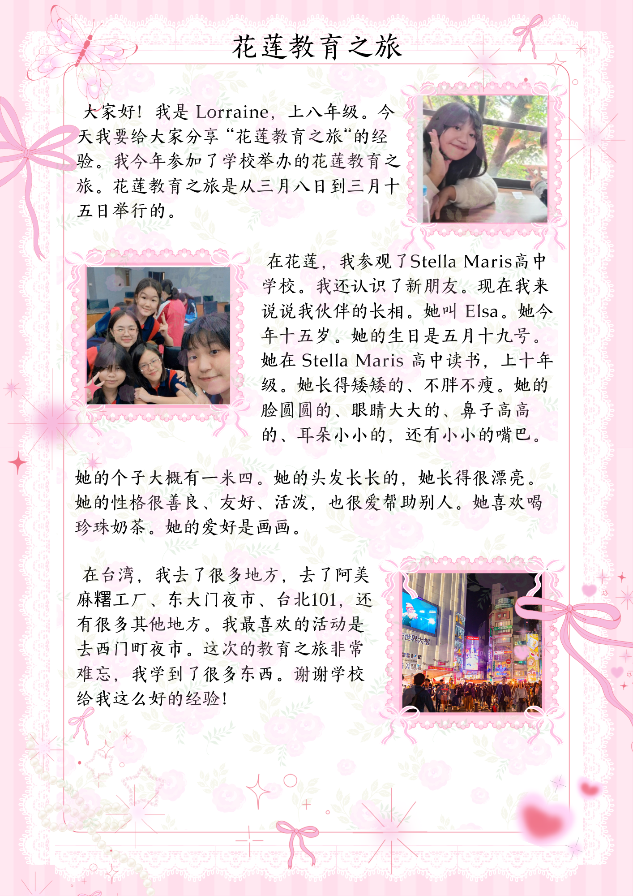

Membuat Paragraf Perkenalan tentang Buddy dalam Bahasa Mandarin
Bahasa Mandarin membuat paragraf perkenalan tentang buddy yang saya mewawancarai dalam bahasa Mandarin. Selama mengikuti kegiatan pendidikan di Hualien, saya bertemu dengan seorang teman baru bernama Elsa. Ia bersekolah di SMA Stella Maris dan saat ini duduk di kelas 10. Umurnya sekitar 15 tahun, dengan tinggi badan kurang lebih 160 cm. Elsa memiliki wajah bulat, mata yang besar, hidung yang cukup mancung, serta rambut panjang yang terurai rapi. Penampilannya sangat menarik dan terlihat selalu ceria.
Dari segi kepribadian, Elsa tergolong orang yang ramah dan suka membantu teman-teman di sekitarnya. Ia juga mudah bergaul, penuh semangat, dan aktif dalam berbagai kegiatan. Selain itu, Elsa gemar minum bubble tea dan memiliki hobi menggambar, terutama gambar-gambar karakter lucu. Selama berada di Hualien, kami sering menghabiskan waktu bersama untuk mencoba berbagai makanan dan menjelajahi tempat-tempat menarik. Saya senang bisa mengenal Elsa dan berharap dapat terus menjalin pertemanan yang baik dengannya.
